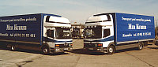
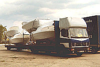
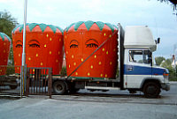
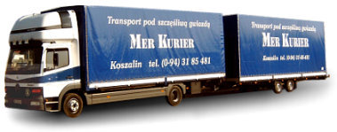

licencja na
transport krajowy i międzynarodowy
0001661
UE VAT No:
6691021627 |
 |
Pragniemy zaoferować Państwu
nasze usługi w zakresie transportu międzynarodowego samochodami
o małym tonażu. Takim transportem zajmujemy się od dziesięciu
lat i mamy już spore doświadczenie w świadczonych
przez nas usługach. |
|
| Nasz tabor to plandeki - auta z przyczepami
i auta solo. Ładowność aut solo to 3 tony, ładowność zestawu
to 3,5 tony. Objętość zestawu dochodzi do 90m3.
Auta solo mają dopuszczalną masę całkowitą 7,5 T,
co umożliwia im jazdę w całej Europie również w soboty,
niedziele i święta. To sprawia, że jesteśmy w stanie
bardzo szybko dostarczyć lub odebrać ładunek z wybranego
punktu w Europie. |
 |
|
 |
Nasze ciężarówki posiadają
koncesje na transport międzynarodowy a działalność nasza
jest asekurowana ubezpieczeniem odpowiedzialności przewoźnika
w transporcie międzynarodowym do wysokości 100 000 USD.
Mamy podpisane umowy ze spedycjami na granicy - nie musicie
się, więc Państwo martwić o upoważnienia na tranzyt do
miejsca rozładunku. |
| Kierowcy są
wyposażenia w telefony komórkowe a dodatkowo pojazdy mają
zamontowane nadajniki GPS do śledzenia satelitarnego
stanu przesyłek by zapewnić maksymalne bezpieczeństwo
ładunku. |
|

Na wszelkie pytania i zlecenia odpowiemy pod naszym telefonem
(094) 31-85-481 lub zawsze bezpośrednio na
telefon komórkowy 0 602 374 003.
Nasz kontakt e-mail:
biuro@merkurier.pl |
|
|